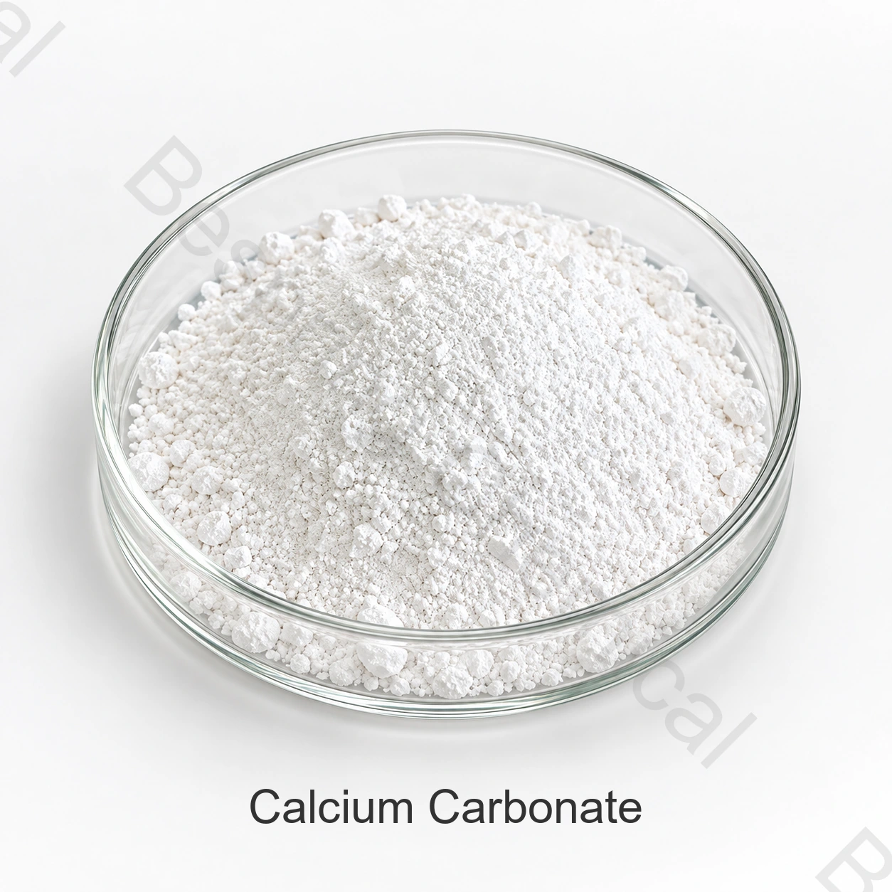

مورد كربونات الكالسيوم
يرجى ذكر الدرجة أو النوع المحدد، والتطبيق، والكمية، والتعبئة، والمقصد، والوثائق المطلوبة.
المكوّن من فئة الأغذية؛ إضافة الأغذية؛
كربونات الكالسيوم بدرجة غذائية مكوّن معدني يُقيّم لإضافة الكالسيوم وتنظيم الحموضة ومنع التكتل أو وظائف أخرى بحسب الدرجة والاستخدام المسموح به.
حدّد الدرجة المطلوبة والتطبيق والكمية والتعبئة وبلد الوجهة والمستندات اللازمة.

نبذة عن المنتج
كربونات الكالسيوم بدرجة غذائية مكوّن معدني يُقيّم لإضافة الكالسيوم وتنظيم الحموضة ومنع التكتل أو وظائف أخرى بحسب الدرجة والاستخدام المسموح به.
وتتوقف الملاءمة التجارية على المصدر الدقيق، والمهمة المقصودة، وعملية التصنيع الغذائي الكاملة، وقواعد سوق المقصد، وتدعم هذه الصفحة التقييم الأولي؛ وتنظم المواصفات الحالية الموقعة، والرسوم المقدمة من فريق المبيعات.
دليل المشتريات الصناعية
استخدم معايير الشراء التالية عند مقارنة الموردين والمصنعين وعروض التوريد بالجملة.
يرجى ذكر الدرجة أو النوع المحدد، والتطبيق، والكمية، والتعبئة، والمقصد، والوثائق المطلوبة.
اطلب عرضاً يحدد المصدر والمواصفة والكمية والوجهة وشروط التسليم المطلوبة.
اذكر الوصفة الكاملة وظروف المعالجة والوظيفة المطلوبة واختبارات قبول المنتج النهائي.
اطلب الهوية وطرق الاختبار وشهادة التحليل وصحيفة بيانات السلامة والشهادات ذات الصلة والتتبع وإدارة التغييرات.
تقييم التطبيقات
تُقيّم التطبيقات وفق الدرجة والوصفة وظروف المعالجة والمتطلبات السارية في سوق الوجهة.
قيّم وظيفة الدرجة المحددة في الوصفة الكاملة وظروف تصنيع الغذاء المقصود.
قارن المواصفة وطرق الاختبار بالوصفة الكاملة وظروف المعالجة ومتطلبات سوق الوجهة.
قارن المواصفة وطرق الاختبار بالوصفة الكاملة وظروف المعالجة ومتطلبات سوق الوجهة.
قارن المواصفة وطرق الاختبار بالوصفة الكاملة وظروف المعالجة ومتطلبات سوق الوجهة.
الاختيار التقني
قارن المواصفة وطرق الاختبار بالوصفة الكاملة وظروف المعالجة ومتطلبات سوق الوجهة.
قارن المواصفة وطرق الاختبار بالوصفة الكاملة وظروف المعالجة ومتطلبات سوق الوجهة.
قارن المواصفة وطرق الاختبار بالوصفة الكاملة وظروف المعالجة ومتطلبات سوق الوجهة.
تقييم حجم الجسيمات، أو قوة الحل أو الشكل المادي مقارنة بالمواصفات الحالية للمنتجات، والصياغة الكاملة، والعمليات، ومتطلبات سوق المقصد.
المواصفة والمستندات
اطلب المواصفة الحالية وورقة البيانات الفنية (TDS) الخاصة بالمصدر، مع طرق الاختبار وأساس النتائج وشهادة تحليل الدفعة.
اطلب المواصفة الحالية وشهادة التحليل ونشرة السلامة والمستندات الخاصة بالمصدر.
التحقق من صحة الأغذية الواجبة التطبيق، والأصل، والحساسية، وكوشر، وهالال، وشهادات الموقع للصف الدقيق والمصدر.
استعراض منظمة الأغذية والزراعة/منظمة الصحة العالميةمع مراجعة القواعد السارية للغذاء النهائي في سوق الوجهة.
مذكرة الامتثال: ولا تجيز الهوية أو المعيار الدولي كل طلب.
التخزين والمناولة
أسئلة المشتري
كربونات الكالسيوم بدرجة غذائية مكوّن معدني يُقيّم لإضافة الكالسيوم وتنظيم الحموضة ومنع التكتل أو وظائف أخرى بحسب الدرجة والاستخدام المسموح به.
CAS 471-34-1 ؛ INS 170(i) ؛ CaCO3. تُحدد خصائص الجسيمات للدرجة المعروضة.
اطلب المواصفة الحالية الخاصة بالمصدر والدرجة، مع طرق الاختبار وأساس النتائج وحدود القبول المتفق عليها.
اطلب ورقة البيانات الفنية (TDS) وصحيفة بيانات السلامة (SDS) وشهادة تحليل نموذجية وشهادة الدفعة والمستندات ذات الصلة بالاستخدام.
اذكر الدرجة والشكل والتطبيق والكمية والتعبئة والوجهة والمتطلبات الفنية والمستندية.
الموارد ذات الصلة
تصفح مجموعة المكونات الغذائية والبيانات الفنية المتاحة
يناقش المواصفات الخاصة والوثائق والعينة والمتطلبات التجارية.
تعرّف إلى خدمات التوريد ودعم التصدير للمشترين الدوليين للمكونات الغذائية.
توريد حسب المواصفة
حدّد الدرجة أو النوع والتطبيق ومتطلبات الأداء الأساسية والكمية والتعبئة والوجهة والمستندات المطلوبة.